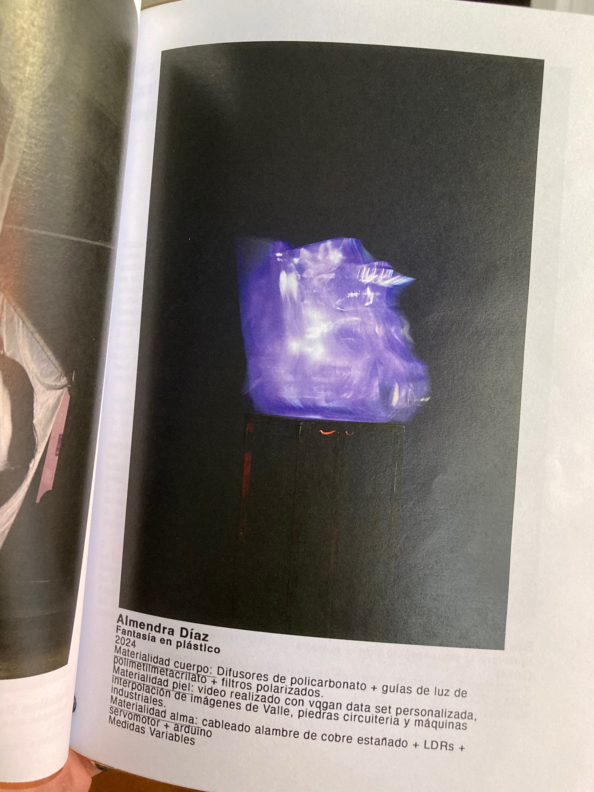
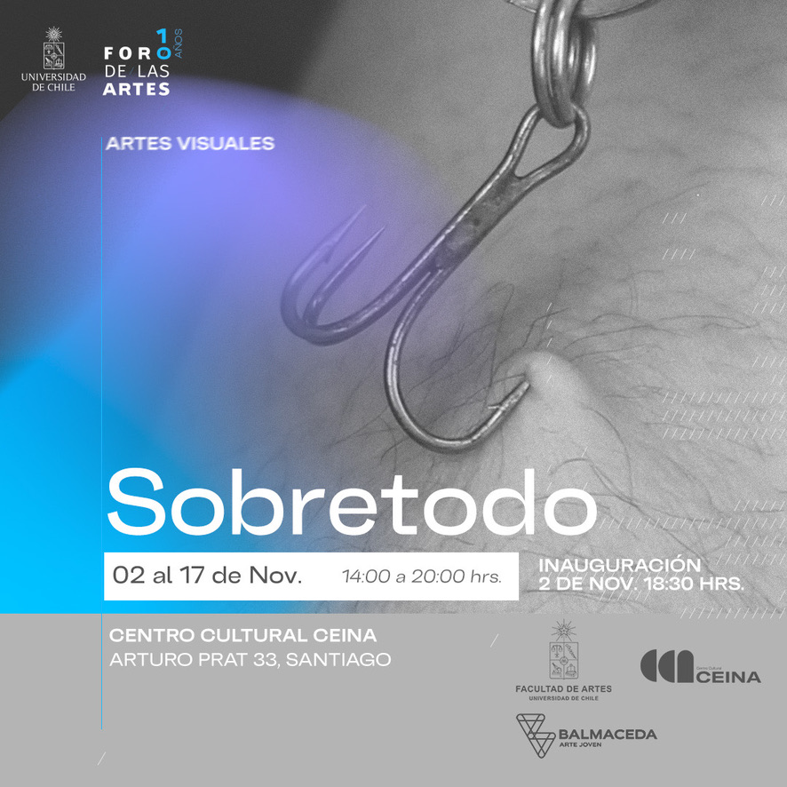

FANTASÍA EN PLÁSTICO
2024


Ficción de futuro:
Una piedra que se fusiona con circuitería y adquiere sensibilidad fotolumínica y se convierte en una criatura de características desconocidas, pero con un origen matérico definido: mineral.
La obra busca generar interrogantes sobre las materialidades y los objetos que nos rodean, cuestionando hasta qué punto pueden considerarse "vivos", y apelando al concepto de "materia viva".
Fue parte de la exposición "Sobretodo" la cual estuvo en exhibicón en CEINA, del 02 al 17 de Noviembre como parte de la programación del Foro de las Artes.
DETALLES
| Año | 2024 |
| Materialidad cuerpo | Difusores de policarbonato + guías de luz de polimetilmetacrilato + filtros polarizados |
| Materialidad piel | Video realizado con VQGAN con una dataset personalizada, interpolación de imágenes de valle, piedras, circuitería y máquinas industriales |
| Materialidad alma | Cableado, alambre de cobre estañado + LDR's + servomotor + Arduino |
| Dimensiones | Medidas variables |
| Formato | Escultura medial |
VIDEO
GALERÍA

